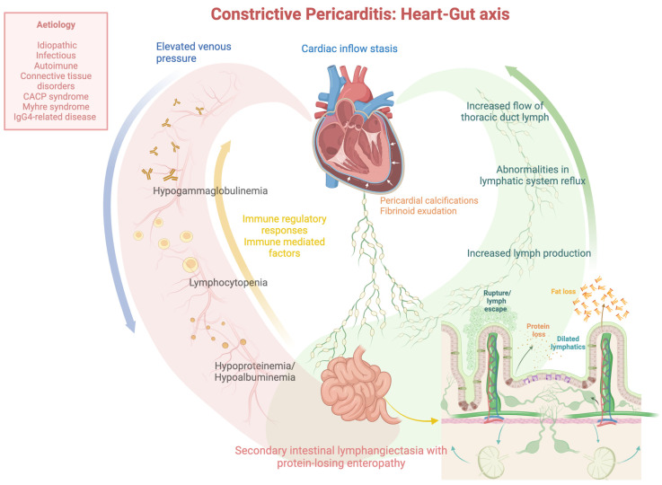
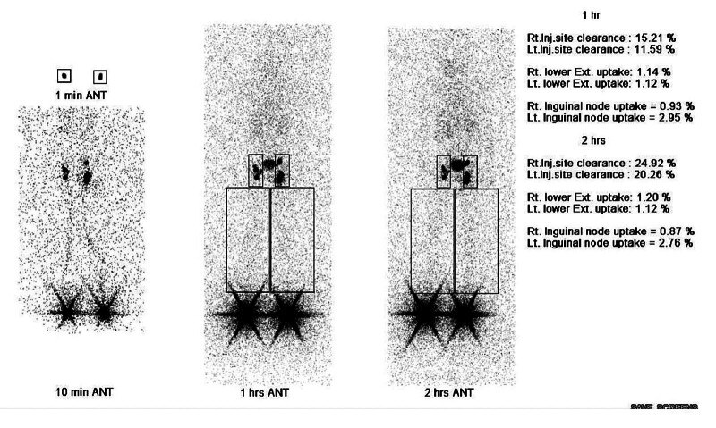
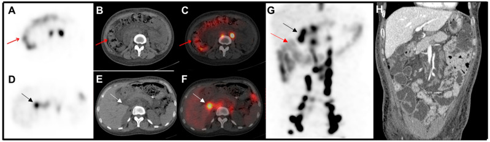

6158 — Protein-losing enteropathy do bạch huyết ở trẻ / Lymphatic protein-losing enteropathy in children
Tags: pattern:phu pattern:giam-albumin pattern:ro-bach-huyet pattern:day-thanh-ruot vung:ruot-non vung:o-bung vung:ong-nguc score:A1AT-clearance protocol:xac-lap-bach-huyet protocol:lymphoscintigraphy protocol:SPECT-CT protocol:DCMRL incidentaloma:khong
Mức chắc chắn (certainty): tổng hợp y văn (literature synthesis) — 1 ca nguyên văn nhi khoa có đủ lymphoscintigraphy + kết quả phẫu thuật bạch huyết (Arch Plast Surg 2026, PMC13461259, CC BY 4.0), 2 bài tổng quan cơ chế – điều trị (PMC13331498, Ann Pediatr Cardiol 2026, CC BY-NC-SA 4.0; PMC11396116, J Clin Med 2024, CC BY 4.0), 1 ca hình ảnh lymphoscintigraphy + SPECT/CT (Diagnostics 2025, PMC11898979, CC BY 4.0) và 1 nghiên cứu về xét nghiệm alpha-1 antitrypsin trong phân (World J Nucl Med 2025, PMC12774530, CC BY 4.0). Nhóm không có bệnh nhân của mình; phần liều thuốc không có nguồn đủ chắc được ghi là chưa đủ nguồn, không bịa.
Câu chốt: PLE do bạch huyết ở trẻ không phải "bệnh ruột" đơn thuần — đó là hệ bạch huyết bị tắc ở đâu đó giữa ruột và tĩnh mạch dưới đòn. Dịch bạch huyết giàu albumin, IgG và lymphocyte rò vào lòng ruột → bộ ba giảm albumin + giảm IgG + giảm lymphocyte, phù, tiêu chảy, suy dinh dưỡng. Ba số phải thuộc: (1) xác định mất protein qua ruột bằng alpha-1 antitrypsin (A1AT) trong phân: spot > 54 mg/dL, clearance > 27 mL/24 giờ khi không tiêu chảy và > 56 mL/24 giờ khi có tiêu chảy; (2) ngưỡng chẩn đoán phù do mất protein là albumin < 3,5 g/dL và protein toàn phần < 6 g/dL (PMC13331498); (3) ở bệnh nhân Fontan, PLE gặp ~12%, sống 5 năm từ cơn đầu 88%, và ghép tim có tử vong chu phẫu tới 40% ở một số đoàn hệ (PMC13331498). Điều trị phải nhắm nguyên nhân tắc bạch huyết, không chỉ truyền albumin.
1. Tổng quan bệnh học – cơ chế hình ảnh
1.1 Vì sao mất protein lại đi kèm mất IgG và lymphocyte
- Giải phẫu – sinh lý: nhung mao ruột non có mạch bạch huyết trung tâm (lacteal) hút chylomicron và dịch kẽ. Dịch bạch huyết chứa albumin, globulin (đặc biệt IgG), lymphocyte và mỡ. Khi áp lực bạch huyết trong thành ruột tăng — do tắc đường dẫn lưu trung tâm, hẹp ống ngực, tăng áp lực tĩnh mạch trung tâm, hoặc loạn sản mạch bạch huyết — các mạch bạch huyết giãn (lymphangiectasia) vỡ vào lòng ruột. Kết quả là mất protein không chọn lọc: albumin, IgG, IgA, lymphocyte, và cả mỡ.
- Vì sao lại là "bộ ba" giảm albumin – giảm IgG – giảm lymphocyte: ba thành phần này cùng nằm trong dịch bạch huyết, nên mất qua ruột sẽ giảm cả ba. Đây là điểm phân biệt với bệnh thận mất protein (nephrotic): mất albumin nhưng IgG và lymphocyte thường bình thường, và nước tiểu có protein lượng lớn. Giảm lymphocyte còn gây suy giảm miễn dịch tế bào, dẫn tới nhiễm trùng tái phát — và nhiễm trùng lại làm PLE nặng thêm (vòng xoắn).
- Vì sao dùng MCT (medium-chain triglyceride): acid béo chuỗi dài (> 12 carbon) được ester hóa thành chylomicron rồi vào lacteal — tức là làm tăng dòng bạch huyết và tăng rò. MCT (C8–C10) hấp thu trực tiếp vào tĩnh mạch cửa, không qua lacteal, nên giảm thể tích và áp lực dịch bạch huyết trong ruột. Đây là cơ sở của chế độ protein ~2 g/kg/ngày, mỡ < 25% năng lượng, bổ sung MCT (PMC13331498).
- Vì sao hình ảnh hạt nhân nhìn thấy chỗ rò: 99mTc-antimony sulphide colloid (99mTc-ASC) tiêm dưới da được mạch bạch huyết ban đầu hấp thu và đi theo đường bạch huyết. Bình thường, tracer đi lên hạch bẹn – chậu – thắt lưng – ống ngực – góc tĩnh mạch, không vào lòng ruột. Khi có tắc dẫn lưu trung tâm, tracer trào ngược và rò vào lòng ruột, hiện thành ổ phóng xạ trong quai ruột trên hình planar và định vị được bằng SPECT/CT. Đây là lý do lymphoscintigraphy vừa chứng minh rò, vừa chỉ ra cơ chế tắc (PMC11898979).

Sơ đồ: tăng áp lực tĩnh mạch + ứ trệ dòng vào tim → tăng dòng và áp lực ống ngực → giãn/ vỡ mạch bạch huyết ruột → mất protein, mỡ, lymphocyte vào lòng ruột. Nguồn: J Clin Med 2024, PMC11396116, CC BY 4.0 (nguyên bản).1.2 Ngưỡng định lượng nằm lòng
| Đại lượng | Ngưỡng / số liệu | Ý nghĩa thực hành | Nguồn |
|---|---|---|---|
| A1AT spot trong phân | > 54 mg/dL | Sàng lọc nhanh khi nghi PLE | PMC13331498 |
| A1AT clearance | > 27 mL/24 giờ (không tiêu chảy); > 56 mL/24 giờ (có tiêu chảy) | Tiêu chuẩn xác định mất protein qua ruột; tiêu chảy làm tăng ngưỡng | PMC13331498 |
| Albumin máu | < 3,5 g/dL | Ngưỡng phù do giảm albumin | PMC13331498 |
| Protein toàn phần | < 6 g/dL | Phối hợp với albumin | PMC13331498 |
| PLE sau Fontan | ~12% bệnh nhân; sống 5 năm từ cơn đầu 88% | Tư vấn tiên lượng | PMC13331498 |
| Ghép tim ở PLE Fontan | Tử vong chu phẫu tới 40% ở một số đoàn hệ; PLE thường hết trong ~1 tháng sau ghép | Chọn thời điểm ghép | PMC13331498 |
| Ca nhi THSD1 | Albumin 1,5–2,0 g/dL trước mổ; A1AT 138,7–195,6 mg/dL (bình thường < 27); sau mổ albumin 1,5 → 3,2 g/dL | Bằng chứng phẫu thuật bạch huyết có thể đảo ngược PLE | PMC13461259 |
2. Mẫu hình + chẩn đoán phân biệt theo cơ chế (gamut)
- Nhóm 1 — bạch huyết tiên phát (primary intestinal lymphangiectasia, Waldmann disease): loạn sản mạch bạch huyết ruột, khởi phát ở trẻ nhỏ; có thể đơn độc hoặc trong hội chứng Hennekam (CCBE1), đột biến THSD1, hội chứng RAS/MAPK (Noonan, CFC); kèm phù bạch huyết chi, tràn dịch màng phổi/màng tim.
- Nhóm 2 — bạch huyết thứ phát do tắc trung tâm: sau Fontan, viêm màng ngoài tim co thắt, suy tim phải, hẹp ống ngực, huyết khối tĩnh mạch trung tâm, xơ hóa sau xạ/phẫu thuật. Đây là nhóm chữa được bằng cách giải quyết nguyên nhân (mở cửa sổ Fontan, cắt màng ngoài tim, nong hẹp).
- Nhóm 3 — bạch huyết do bệnh ruột: lao ruột, lymphoma, bệnh Crohn, viêm ruột do CMV, bệnh mô bào, sau ghép tạng.
- Nhóm 4 — PLE không do bạch huyết: bệnh celiac, viêm dạ dày ruột tăng bạch cầu ái toan, loét/ăn mòn niêm mạc, nhiễm ký sinh trùng, hội chứng ruột ngắn (bài 1762).
- Nhóm 5 — giảm albumin KHÔNG do ruột (bắt chước): hội chứng thận nhiễm mỡ (mất qua nước tiểu), xơ gan/suy gan (giảm tổng hợp), suy dinh dưỡng, giảm albumin máu bẩm sinh (congenital analbuminemia) — albumin rất thấp nhưng A1AT trong phân bình thường, không có mất protein qua ruột.
- Mnemonic "LYMPH": Lacteal dilation, Yellow-white villi on endoscopy, Midgut leak on scintigraphy, Protein + IgG + lymphocytes low, Hypoalbuminemia with edema.
3. Bảng so sánh phân biệt (ma trận đối chiếu)
| Thực thể (entity) | Hình ảnh / xét nghiệm điển hình | Chốt vào (rule-in) | Chốt loại (rule-out) | Gợi ý xác nhận |
|---|---|---|---|---|
| Bạch huyết tiên phát (Waldmann, Hennekam, THSD1) | Phù chi + phù mặt; lymphoscintigraphy: dermal backflow + rò vào ruột; nội soi: nhung mao trắng như tuyết; sinh thiết: giãn mạch bạch huyết nhung mao | A1AT phân tăng + nội soi/sinh thiết có lymphangiectasia + phù bạch huyết ngoại vi | Không có rò trên scintigraphy không loại trừ (rò ngắt quãng) | Nội soi + sinh thiết; gen CCBE1/THSD1/RAS-MAPK; DCMRL |
| PLE sau Fontan / viêm màng ngoài tim co thắt | Tiền sử Fontan hoặc chèn ép tim; tăng áp lực tĩnh mạch trung tâm; lymphoscintigraphy thấy tắc dòng ra + trào ngược; siêu âm tim/MRI xác nhận | Bệnh tim phải + A1AT phân tăng + phù | A1AT bình thường + không có bệnh tim → tìm nguyên nhân khác | Siêu âm tim, thông tim, MRI; điều trị nguyên nhân |
| Bệnh celiac | Teo nhung mao, tăng lymphocyte nội biểu mô; anti-tTG IgA dương | Anti-tTG dương + teo nhung mao đáp ứng chế độ không gluten | A1AT phân tăng đơn độc + anti-tTG âm → không phải celiac | Anti-tTG, nội soi + sinh thiết |
| Viêm dạ dày ruột tăng bạch cầu ái toan | Dày thành ruột, tăng bạch cầu ái toan máu/dịch ruột, đáp ứng corticoid | Eosinophil cao + sinh thiết có xâm nhập eosinophil | Eosinophil bình thường + lymphangiectasia → PLE bạch huyết | Sinh thiết, đáp ứng corticoid |
| Hội chứng thận nhiễm mỡ | Protein niệu > 3,5 g/ngày, albumin thấp, phù; A1AT phân bình thường | Protein niệu lớn + A1AT phân bình thường | A1AT phân tăng → mất qua ruột, không phải thận | Điện di protein niệu, sinh thiết thận |
| Giảm albumin máu bẩm sinh | Albumin rất thấp từ nhỏ, phù nhẹ/không tương xứng với mức albumin, A1AT phân bình thường, không mất qua thận | A1AT phân bình thường + không protein niệu | Có mất protein qua ruột → không phải bẩm sinh đơn thuần | Điện di protein, gen ALB |
4. Protocol chẩn đoán – điều trị
4.1 Trình tự (không bỏ bước xác định mất protein)
flowchart TD
A[Trẻ phù + albumin < 3,5 g/dL] --> B[Loại trừ thận: protein niệu, chức năng gan]
B -->|Protein niệu lớn| C[Hội chứng thận nhiễm mỡ]
B -->|Không| D[A1AT phân: spot > 54 mg/dL hoặc clearance > 27 mL/24h]
D -->|Âm mà vẫn nghi| E[Lặp khi không tiêu chảy; scintigraphy]
D -->|Dương| F[Tìm nguyên nhân: siêu âm tim, nội soi + sinh thiết, MRI ruột]
F --> G{Loạn sản bạch huyết tiên phát?}
G -->|Có| H[Chế độ protein 2 g/kg/ngày, mỡ < 25% năng lượng + MCT]
G -->|Không| I[Điều trị nguyên nhân: Fontan, màng ngoài tim, lao, lymphoma]
H --> J{Còn phù/albumin thấp sau 4–8 tuần?}
J -->|Có| K[Lymphoscintigraphy/SPECT-CT hoặc DCMRL]
K --> L[Can thiệp bạch huyết: nối bạch mạch–tĩnh mạch, giải ép ống ngực, nút rò]
J -->|Không| M[Theo dõi albumin, IgG, lymphocyte, tăng trưởng]
- Bước 1 — chứng minh mất protein qua ruột: A1AT là protein do gan tổng hợp, không bị phân hủy trong ruột, nên xuất hiện trong phân khi có rò protein. Phải lấy mẫu 24 giờ nếu làm clearance; spot dùng sàng lọc nhưng ảnh hưởng bởi độ pha loãng phân. Nếu trẻ đang tiêu chảy, ngưỡng tăng lên 56 mL/24 giờ (PMC13331498).
- Bước 2 — loại trừ mất protein ngoài ruột: protein niệu, chức năng gan (albumin, INR), tình trạng dinh dưỡng. Đừng bỏ qua giảm albumin bẩm sinh ở trẻ nhỏ.
- Bước 3 — tìm nguyên nhân: siêu âm tim (Fontan, chèn ép, suy tim phải), nội soi tiêu hóa + sinh thiết (nhung mao trắng, giãn lacteal, lymphoma, lao), MRI ruột (dày thành, phù mạc treo), lymphoscintigraphy planar + SPECT/CT, DCMRL khi cần bản đồ giải phẫu trước can thiệp.
- Bước 4 — điều trị: điều trị nguyên nhân + dinh dưỡng (protein ~2 g/kg/ngày, mỡ < 25% năng lượng, MCT, vitamin tan trong mỡ, canxi). Thuốc hỗ trợ: lợi tiểu, truyền albumin/IVIG, corticoid, heparin trọng lượng phân tử thấp, midodrine, sirolimus — bằng chứng chủ yếu ca lẻ/ý kiến chuyên gia, không có thử nghiệm ngẫu nhiên (PMC13331498; PMC11396116).
- Bước 5 — can thiệp bạch huyết khi kháng trị: nối bạch mạch–tĩnh mạch (lymphaticovenous anastomosis, LVA), nối hạch–tĩnh mạch (LNVA), giải ép ống ngực, nút mạch bạch huyết. Ca nhi THSD1: sau LVA + LNVA, albumin 1,5 → 3,2 g/dL, chu vi chi giảm, A1AT bình thường hóa; nhưng tái phát sau 3 năm sau nhiễm hô hấp trên — bằng chứng rằng can thiệp không phải chữa khỏi vĩnh viễn ở trẻ đang lớn (PMC13461259).
4.2 Hình ảnh chốt: lymphoscintigraphy và SPECT/CT

Ba mốc 10 phút – 1 giờ – 2 giờ sau tiêm dưới da: dermal backflow (trào ngược vào da) hai bên, rõ hơn ở chân phải — dấu hiệu loạn sản/tắc dẫn lưu bạch huyết, không phải phù do tim–thận. Nguồn: Arch Plast Surg 2026, PMC13461259, CC BY (nguyên bản).
SPECT/CT định vị phóng xạ trong đại tràng lên và ngang (mũi tên đỏ) — bằng chứng tracer thoát vào lòng ruột; kèm hạch quanh tụy và dày thành quai ruột trên CT cản quang (H). Nguồn: Diagnostics 2025, PMC11898979, CC BY 4.0 (nguyên bản).5. Biến thể bình thường và cạm bẫy
- A1AT âm không loại trừ PLE: rò có thể ngắt quãng, và tiêu chảy pha loãng làm giảm nồng độ; phải lặp xét nghiệm khi không tiêu chảy hoặc chuyển sang scintigraphy. Ngược lại, tiêu chảy kéo dài làm tăng ngưỡng clearance (PMC13331498).
- Phù do tim/thận bị gọi nhầm là PLE: ở trẻ Fontan, phù có thể do suy tim phải đơn thuần; chỉ gọi PLE khi có bằng chứng mất protein qua ruột. Đo A1AT trước khi kết luận.
- Bỏ sót phù bạch huyết ngoại vi: phù chi không đối xứng, dày da, dermal backflow trên scintigraphy là manh mối của bệnh bạch huyết hệ thống (Hennekam, THSD1), không chỉ là hậu quả của giảm albumin.
- Sinh thiết ruột bình thường không loại trừ: tổn thương khu trú ở hỗng tràng, có thể bỏ sót nếu sinh thiết tá tràng; nội soi viên nang (video capsule) tăng tỉ lệ phát hiện (PMC11396116).
- MCT không phải "thuốc chữa": cải thiện albumin nhưng không giải quyết tắc trung tâm; trẻ vẫn có thể tiến triển xơ gan, suy dinh dưỡng, nhiễm trùng. Đánh giá lại nếu albumin không tăng sau 4–8 tuần.
- Sau can thiệp bạch huyết vẫn tái phát: ca nhi THSD1 tái phát sau 3 năm, sau một đợt nhiễm hô hấp trên — cần theo dõi albumin, A1AT, chu vi chi dài hạn (PMC13461259).
6. Tự lượng giá — Blind Quiz
Ca 1 — Bé trai 7 tuổi, phù hai chân kéo dài, albumin 1,5 g/dL:
- Gợi ý: phù chân không đối xứng, không protein niệu, men gan bình thường.
- Hỏi: (1) mô tả bất thường trên ba mốc thời gian; (2) nghĩ bệnh gì; (3) xét nghiệm nào xác định mất protein qua ruột?
Bấm để hiện đáp án (findings + chẩn đoán)
- Findings: ở 10 phút đã thấy dermal backflow sớm hai bên; 1 giờ và 2 giờ dermal backflow rõ hơn ở chân phải, kèm ứ trệ/ trào ngược — không có dòng bạch huyết thẳng lên ống ngực như bình thường.
- Chẩn đoán: loạn sản bạch huyết hệ thống có PLE — ca thật của bé trai 7 tuổi mang đột biến THSD1, phù bạch huyết chi + PLE; albumin trước mổ 1,5–2,0 g/dL, A1AT phân 138,7–195,6 mg/dL (bình thường < 27).
- Xác định mất protein qua ruột: A1AT clearance 24 giờ > 27 mL/24h (không tiêu chảy) hoặc > 56 mL/24h (có tiêu chảy), hoặc spot > 54 mg/dL.
- Điều trị của ca: LVA + LNVA, albumin 1,5 → 3,2 g/dL, A1AT bình thường hóa; tái phát sau 3 năm.
- Nguồn ảnh: Arch Plast Surg 2026, PMC13461259, Fig. 5 — CC BY (nguyên bản).
Ca 2 — Nữ 30 tuổi, phù từ chân lên mặt, tiêu chảy nhẹ 8 tháng, albumin thấp:
- Hỏi: (1) phóng xạ bất thường nằm ở đâu? (2) cơ chế nào giải thích cả phù chi và mất protein qua ruột? (3) vì sao không phải bệnh thận?
Bấm để hiện đáp án
- Findings: phóng xạ lan tỏa trong đại tràng lên và ngang (mũi tên đỏ) — tracer đã đi vào lòng ruột; thêm hạch quanh tụy và dày thành hỗng tràng/tá tràng trên CT cản quang. Hình planar trước đó còn thấy dermal backflow hai chân.
- Cơ chế: tắc dòng ra bạch huyết trung tâm (góc tĩnh mạch/ống ngực) → trào ngược dịch bạch huyết qua ruột (PLE) và qua da/chi dưới (phù bạch huyết). Đây là "một tắc – hai biểu hiện".
- Vì sao không phải thận: không protein niệu, chức năng thận bình thường; A1AT trong phân tăng mới là bằng chứng mất protein qua ruột.
- Lưu ý: ca này là người lớn — dùng để dạy hình ảnh và cơ chế, không đại diện cho nhóm nhi khoa.
- Nguồn ảnh: Diagnostics 2025, PMC11898979, Fig. 2 — CC BY 4.0.
Ca 3 — Tình huống tổng hợp (không phải ca nguyên văn): trẻ sau phẫu thuật Fontan 6 năm, phù, albumin 2,6 g/dL, tiêu chảy:
- Hỏi: (1) nhìn sơ đồ mục 1.1, kể chuỗi cơ chế từ tim đến ruột; (2) tại sao MCT giúp mà không chữa khỏi; (3) biện pháp nào giải quyết nguyên nhân?
Bấm để hiện đáp án
- Chuỗi cơ chế: tuần hoàn Fontan → tăng áp lực tĩnh mạch trung tâm + giảm cung lượng → ứ trệ bạch huyết → tăng sản xuất và áp lực dịch ống ngực → giãn/vỡ mạch bạch huyết nhung mao → mất albumin, IgG, lymphocyte, mỡ vào lòng ruột → phù, giảm albumin, suy dinh dưỡng, giảm miễn dịch (PMC13331498; sơ đồ PMC11396116).
- MCT giúp nhưng không chữa: MCT hấp thu vào tĩnh mạch cửa, bỏ qua lacteal, nên giảm thể tích dịch bạch huyết và giảm rò — nhưng áp lực tĩnh mạch trung tâm vẫn cao, nên bệnh vẫn tiến triển.
- Giải quyết nguyên nhân: tối ưu huyết động Fontan (nong/stent hẹp, mở cửa sổ Fontan), cắt màng ngoài tim nếu viêm màng ngoài tim co thắt, và ghép tim khi suy tuần hoàn — PLE thường hết trong ~1 tháng sau ghép, nhưng tử vong chu phẫu tới 40% ở một số đoàn hệ (PMC13331498).
- Câu chốt: đừng điều trị "giảm albumin" như một bệnh độc lập — tìm và giải quyết tắc bạch huyết.
Bài liên quan chéo
- 1822 – DCMRL bạch huyết — bản đồ bạch huyết trước can thiệp
- 1823 – Trametinib trong dị dạng bạch huyết RAS/MAPK
- 1808 – Sirolimus trong dị dạng bạch huyết: theo dõi ngừng thuốc
- 6157 – Tràn dưỡng chấp màng tim ở trẻ
- 1839 – Chylothorax sau cắt/ghép gan
- 600 – Tổng quan Nhi khoa
Không dùng để chẩn đoán độc lập khi chưa có người hướng dẫn.